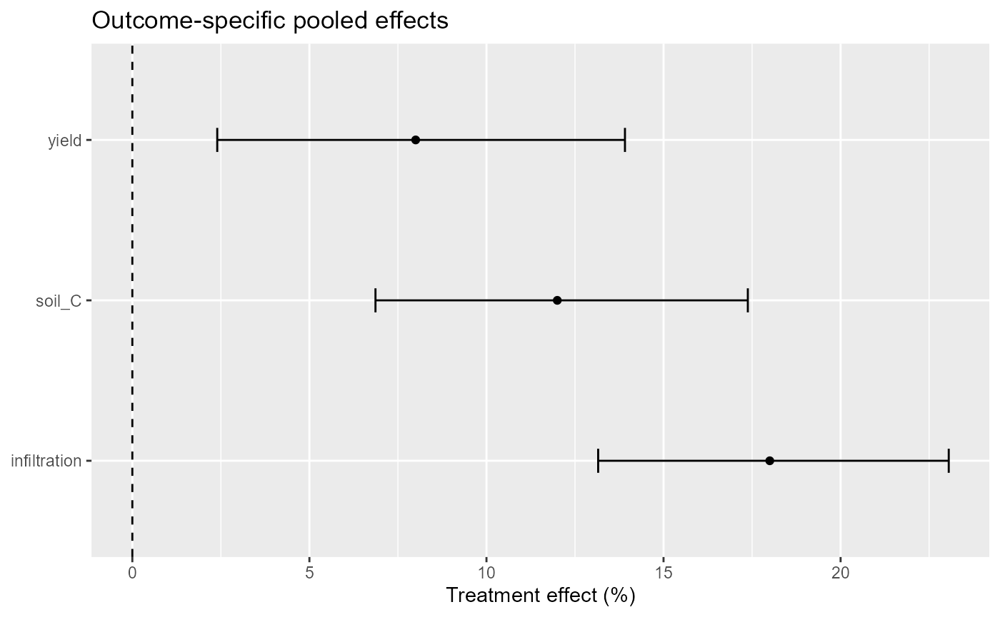
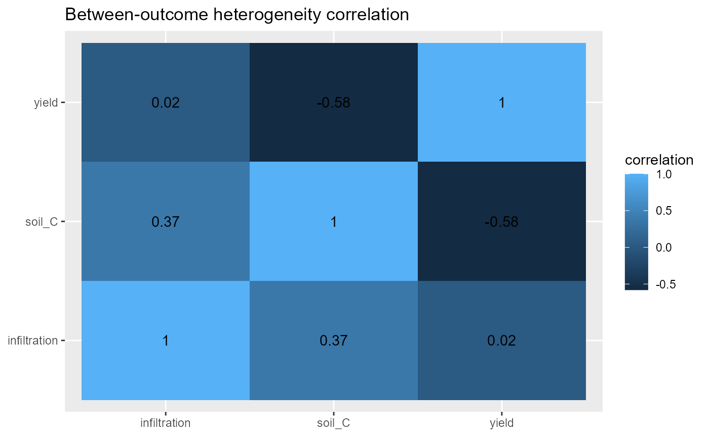
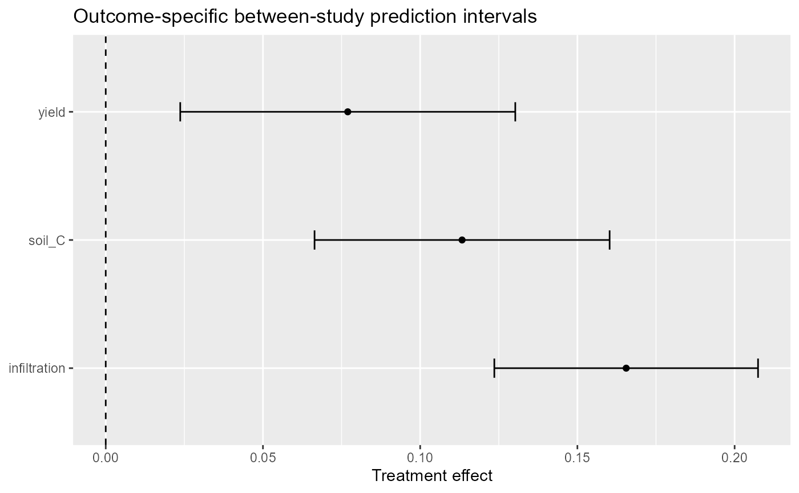

Multivariate treatment-control meta-analysis in agronomy
agriPairMetaFlow
Source:vignettes/v08-multivariate-meta-analysis.Rmd
v08-multivariate-meta-analysis.RmdWhy multivariate synthesis matters
Agronomic experiments rarely measure only one endpoint. A soil-management study may report yield, soil organic carbon, infiltration, nutrient-use efficiency, and greenhouse-gas emissions from the same experimental units. Separate univariate meta-analyses are useful for endpoint-specific questions, but they discard the correlation created by measuring several responses in the same study and cannot estimate a between-outcome heterogeneity covariance structure.
agriPairMetaFlow therefore treats multivariate synthesis
as a distinct estimand and data problem. A study identifier must
identify the independent experimental unit contributing the response
vector. The outcome variable identifies endpoints, while
yi and vi remain the effect estimate and its
sampling variance on a coherent scale.
Teaching data
soil_management_multiresponse contains three outcomes
per synthetic experiment. The response-ratio effects are already
available as yi; the package deliberately labels the data
as synthetic teaching data rather than field evidence.
head(soil_management_multiresponse)
#> study_id outcome treatment control mean_t sd_t n_t mean_c sd_c
#> 1 SM01 soil_C conservation conventional 18.547 1.573 5 16.560 1.656
#> 2 SM02 infiltration conservation conventional 27.730 2.232 6 23.500 2.350
#> 3 SM03 yield conservation conventional 4.355 0.383 4 4.032 0.403
#> 4 SM04 soil_C conservation conventional 19.757 1.676 5 17.640 1.764
#> 5 SM05 infiltration conservation conventional 26.550 2.137 6 22.500 2.250
#> 6 SM06 yield conservation conventional 4.173 0.367 4 3.864 0.386
#> n_c effect_id mv_study_id climate_zone lnRR yi
#> 1 5 SM01_soil_C SMV01 semiarid 0.11331790 0.11331790
#> 2 6 SM02_infiltration SMV01 semiarid 0.16551444 0.16551444
#> 3 4 SM03_yield SMV01 semiarid 0.07706208 0.07706208
#> 4 5 SM04_soil_C SMV02 transition 0.11333881 0.11333881
#> 5 6 SM05_infiltration SMV02 transition 0.16551444 0.16551444
#> 6 4 SM06_yield SMV02 transition 0.07693229 0.07693229
#> vi sei measure
#> 1 0.003438600 0.05863958 ROM
#> 2 0.002746452 0.05240660 ROM
#> 3 0.004431096 0.06656648 ROM
#> 4 0.003439249 0.05864511 ROM
#> 5 0.002746430 0.05240640 ROM
#> 6 0.004428466 0.06654672 ROM
with(soil_management_multiresponse, table(mv_study_id, outcome))
#> outcome
#> mv_study_id infiltration soil_C yield
#> SMV01 1 1 1
#> SMV02 1 1 1
#> SMV03 1 1 1
#> SMV04 1 1 1
#> SMV05 1 1 1
#> SMV06 1 1 1The second example, biochar_multiresponse, contains
yield, soil carbon, and N2O responses from eight synthetic studies.
head(biochar_multiresponse)
#> study_id outcome climate_zone treatment control mean_t sd_t n_t mean_c
#> 1 BC01 yield semiarid biochar no_biochar 4.0090 0.3849 5 3.80
#> 2 BC01 soil_C semiarid biochar no_biochar 16.2400 1.4031 5 14.50
#> 3 BC01 N2O semiarid biochar no_biochar 1.9800 0.2661 5 2.20
#> 4 BC02 yield transition biochar no_biochar 4.2307 0.4062 6 3.98
#> 5 BC02 soil_C transition biochar no_biochar 17.2064 1.4866 6 15.20
#> 6 BC02 N2O transition biochar no_biochar 2.0292 0.2727 6 2.28
#> sd_c n_c effect_id lnRR vi sei measure yi
#> 1 0.3800 5 BC01_yield 0.05354077 0.003843200 0.06199355 ROM 0.05354077
#> 2 1.3050 5 BC01_soil_C 0.11332869 0.003112992 0.05579419 ROM 0.11332869
#> 3 0.3080 5 BC01_N2O -0.10536052 0.007532672 0.08679097 ROM -0.10536052
#> 4 0.3980 6 BC02_yield 0.06109510 0.003202667 0.05659211 ROM 0.06109510
#> 5 1.3680 6 BC02_soil_C 0.12398598 0.002594160 0.05093290 ROM 0.12398598
#> 6 0.3192 6 BC02_N2O -0.11653382 0.006277227 0.07922895 ROM -0.11653382
with(biochar_multiresponse, table(study_id, outcome))
#> outcome
#> study_id N2O soil_C yield
#> BC01 1 1 1
#> BC02 1 1 1
#> BC03 1 1 1
#> BC04 1 1 1
#> BC05 1 1 1
#> BC06 1 1 1
#> BC07 1 1 1
#> BC08 1 1 1Start with the sampling covariance
If the within-study covariance between outcomes is known or can be reconstructed, it should be supplied. The simplest diagonal matrix assumes zero within-study outcome correlation and is useful as a baseline, not as a default scientific conclusion.
V0 <- diag(soil_management_multiresponse$vi)
mv0 <- apm_multivariate(
soil_management_multiresponse,
outcome = outcome,
study = mv_study_id,
V = V0,
structure = "UN"
)
mv0
#> <apm_multivariate> outcomes=3 | backend=metafor | structure=UN
#> outcome estimate se ci_lower ci_upper
#> soil_C 0.11332670 0.02394046 0.06640427 0.1602491
#> infiltration 0.16551444 0.02139614 0.12357878 0.2074501
#> yield 0.07696938 0.02718237 0.02369290 0.1302458
#> context tau pi_lower pi_upper
#> reference/zero moderator context 1.511808e-07 0.06640427 0.1602491
#> reference/zero moderator context 1.498374e-07 0.12357878 0.2074501
#> reference/zero moderator context 6.450400e-07 0.02369290 0.1302458
#> Between-outcome correlation matrix available.
summary(mv0)
#> <summary.apm_multivariate> backend=metafor | structure=UN
#> outcome estimate se ci_lower ci_upper
#> soil_C 0.11332670 0.02394046 0.06640427 0.1602491
#> infiltration 0.16551444 0.02139614 0.12357878 0.2074501
#> yield 0.07696938 0.02718237 0.02369290 0.1302458
#> context tau pi_lower pi_upper
#> reference/zero moderator context 1.511808e-07 0.06640427 0.1602491
#> reference/zero moderator context 1.498374e-07 0.12357878 0.2074501
#> reference/zero moderator context 6.450400e-07 0.02369290 0.1302458
#> Between-outcome correlation:
#> soil_C infiltration yield
#> soil_C 1.0000000 0.36743510 -0.58010885
#> infiltration 0.3674351 1.00000000 0.02283455
#> yield -0.5801088 0.02283455 1.00000000An unstructured between-outcome covariance is flexible but parameter intensive. A compound-symmetry or diagonal structure can be evaluated when scientifically justified.
mv_cs <- apm_multivariate(
soil_management_multiresponse,
outcome = outcome,
study = mv_study_id,
V = V0,
structure = "CS"
)
mv_diag <- apm_multivariate(
soil_management_multiresponse,
outcome = outcome,
study = mv_study_id,
V = V0,
structure = "DIAG"
)Moderators in a multivariate model
Moderators are expanded by outcome. This allows the treatment-control effect to vary with climate while retaining outcome-specific intercepts.
mv_climate <- apm_multivariate(
soil_management_multiresponse,
outcome = outcome,
study = mv_study_id,
V = V0,
mods = ~ climate_zone,
structure = "UN"
)The modifier should be prespecified and interpreted as an association in the meta-regression. It is not automatically a causal effect of climate.
Unknown within-study correlations
Published agronomic papers often report marginal standard errors but
omit cross-outcome covariances. A single guessed correlation should not
be hidden inside the analysis. apm_mvcor_sensitivity()
reconstructs block covariance matrices over a prespecified correlation
grid and refits the same multivariate model.
sens1 <- apm_mvcor_sensitivity(
soil_management_multiresponse,
outcome = outcome,
study = mv_study_id,
rho = c(0, .25, .50, .75)
)
sens1
#> <apm_sensitivity>
#> rho outcome estimate se tau
#> 0.00 soil_C 0.11332670 0.02394046 1.511841e-07
#> 0.00 infiltration 0.16551444 0.02139614 1.498349e-07
#> 0.00 yield 0.07696938 0.02718237 6.450308e-07
#> 0.25 soil_C 0.11332670 0.02394046 4.904135e-08
#> 0.25 infiltration 0.16551444 0.02139613 7.454493e-08
#> 0.25 yield 0.07696938 0.02718237 2.000015e-07
#> 0.50 soil_C 0.11332671 0.02394046 1.134472e-07
#> 0.50 infiltration 0.16551444 0.02139613 1.039788e-07
#> 0.50 yield 0.07696938 0.02718237 1.813707e-07
#> 0.75 soil_C 0.11332672 0.02394046 1.120506e-07
#> 0.75 infiltration 0.16551445 0.02139613 4.058872e-08
#> 0.75 yield 0.07696939 0.02718237 1.251009e-07The same sensitivity workflow can be used for the biochar example.
sens2 <- apm_mvcor_sensitivity(
biochar_multiresponse,
outcome = outcome,
study = study_id,
rho = seq(0, .8, by=.2),
metric = "tau"
)A moderator can be retained across the entire sensitivity grid.
sens3 <- apm_mvcor_sensitivity(
soil_management_multiresponse,
outcome = outcome,
study = mv_study_id,
rho = c(0, .3, .6),
fit_args = list(mods = ~ climate_zone)
)The scientific question is not which value of rho gives the most convenient result. The question is whether the substantive conclusion changes across a plausible set of correlations.
Visualization
The outcome forest emphasizes endpoint-specific pooled effects.
apm_multivariate_plot(mv0, type="outcome_forest", transform="percent")
#> `height` was translated to `width`.
When a between-outcome correlation matrix is estimable, its structure can be inspected directly.
if (!is.null(mv0$between_cor)) {
apm_multivariate_plot(mv0, type="correlation")
}
A third presentation is available for the outcome summary on the model scale.
apm_multivariate_plot(mv0, type="prediction", transform="none")
#> `height` was translated to `width`.
Backend cross-check
The default multivariate backend is metafor::rma.mv().
mixmeta is optional and useful as an independent
implementation and for alternative multivariate structures. The 0.4.0
adapter requires a complete outcome profile for every study when
backend="mixmeta".
mv_mix <- apm_multivariate(
biochar_multiresponse,
outcome = outcome,
study = study_id,
V = diag(biochar_multiresponse$vi),
structure = "CS",
backend = "mixmeta"
)During local validation, estimates and covariance matrices should be
compared directly with independently specified metafor and
mixmeta fits. Agreement is a numerical validation gate, not
merely a documentation example.
Interpretation checklist
A multivariate result should state the effect scale, the independent study unit, the origin of the sampling covariance matrix, the assumed or estimated correlation structure, the between-outcome heterogeneity structure, the number of studies and outcome profiles, and the sensitivity of conclusions to unknown correlations. Missing covariance information should never be described as if it were observed.